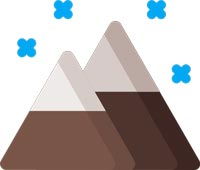

Website Planning Document
Dina Moreno G
Site Description
The goal of this document is to outline the howsoutside.com website.
I will describe its typography, color scheme, personas, and scenarios.
This site is a tool for planning and execution for the WDD 230 BYU-I course.
Site Name

This site name is howsoutside.com. The target users are young people who
like to travel and have to be aware of weather information
Purpose Statement
The purpose of the howsoutside.com website is to inform the user about
the weather efficiently and interactively. The site pretends to satisfy
the demand for young audiences. This site is fun, and help young
travelers to know the best time to schedule their adventures.